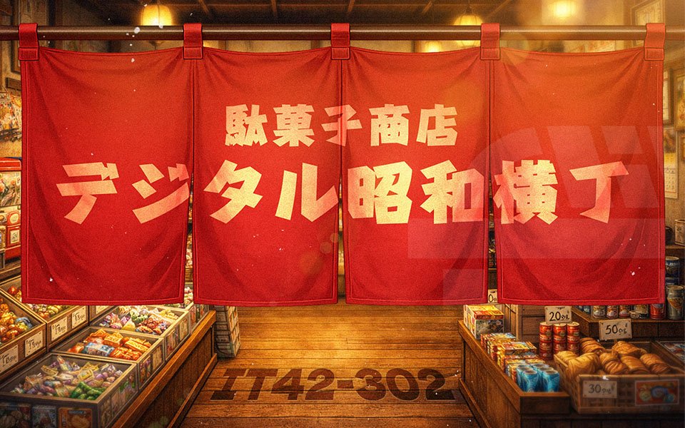
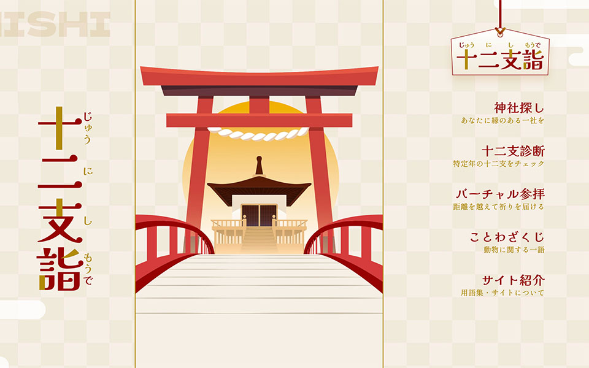
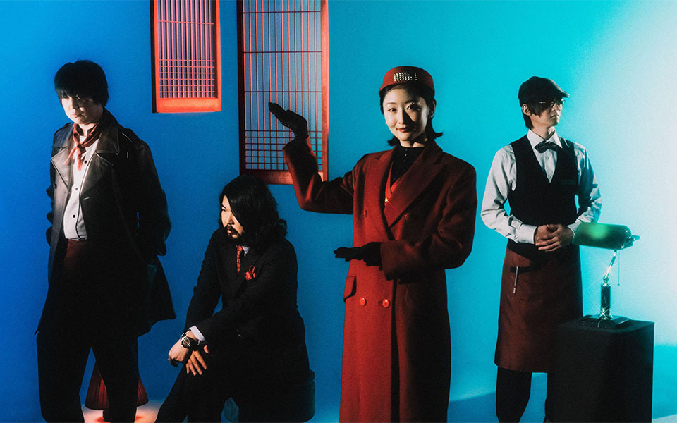
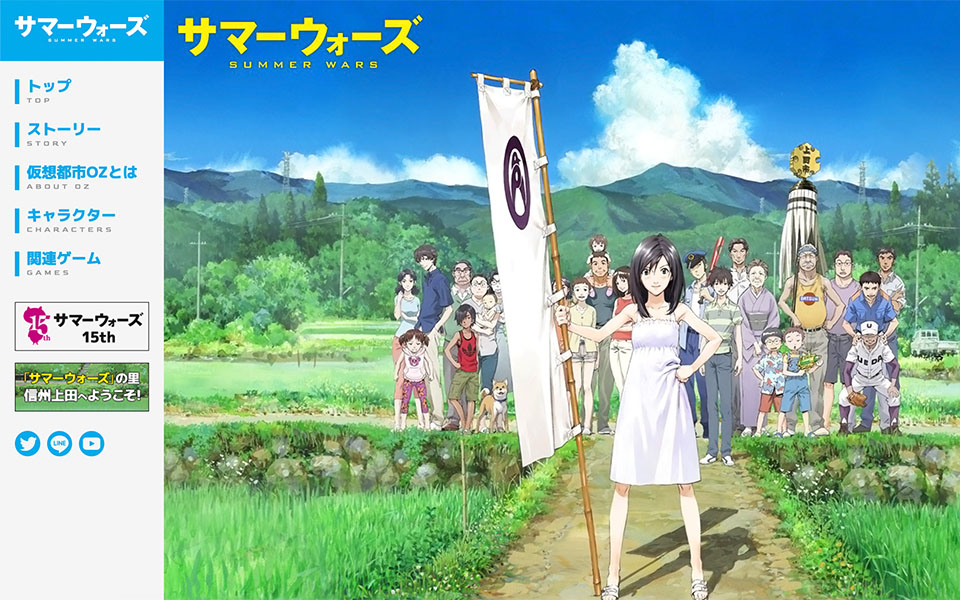
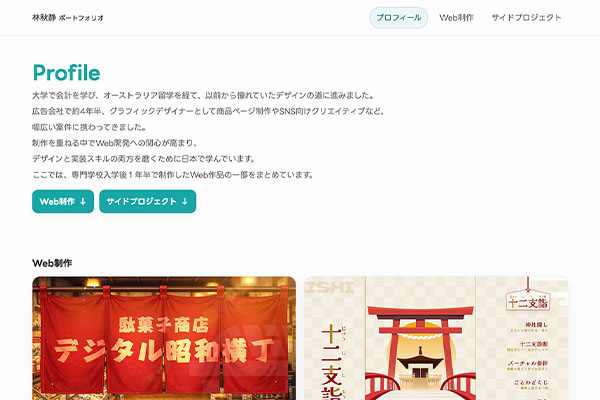
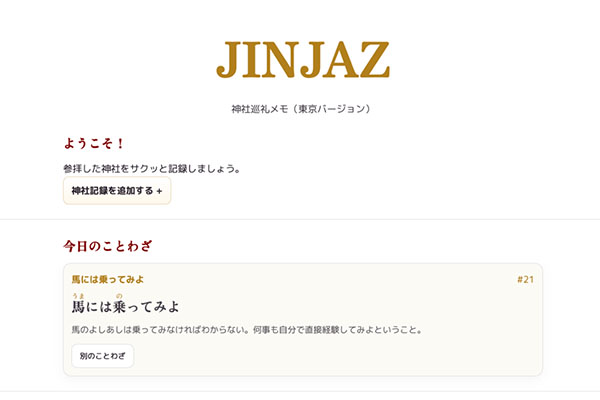
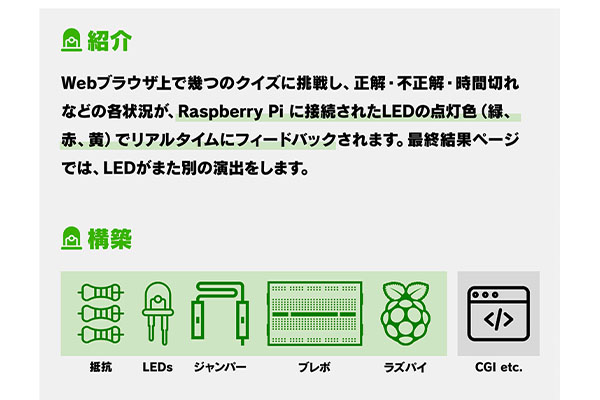
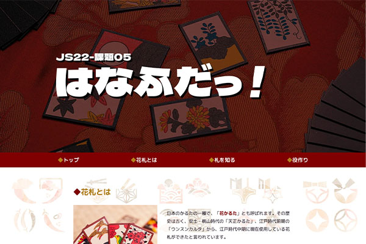

Web制作



サイドプロジェクト

ポートフォリオ

神社巡礼メモ


大学で会計を学び、オーストラリア留学を経て、以前から憧れていたデザインの道に進みました。
広告会社で約4年半、グラフィックデザイナーとして商品ページ制作やSNS向けクリエイティブなど、
幅広い案件に携わってきました。
制作を重ねる中でWeb開発への関心が高まり、
デザインと実装スキルの両方を磨くために日本で学んでいます。
ここでは、専門学校入学後１年半で制作したWeb作品の一部をまとめています。







